Madame
2019 · Le tournant mélodique
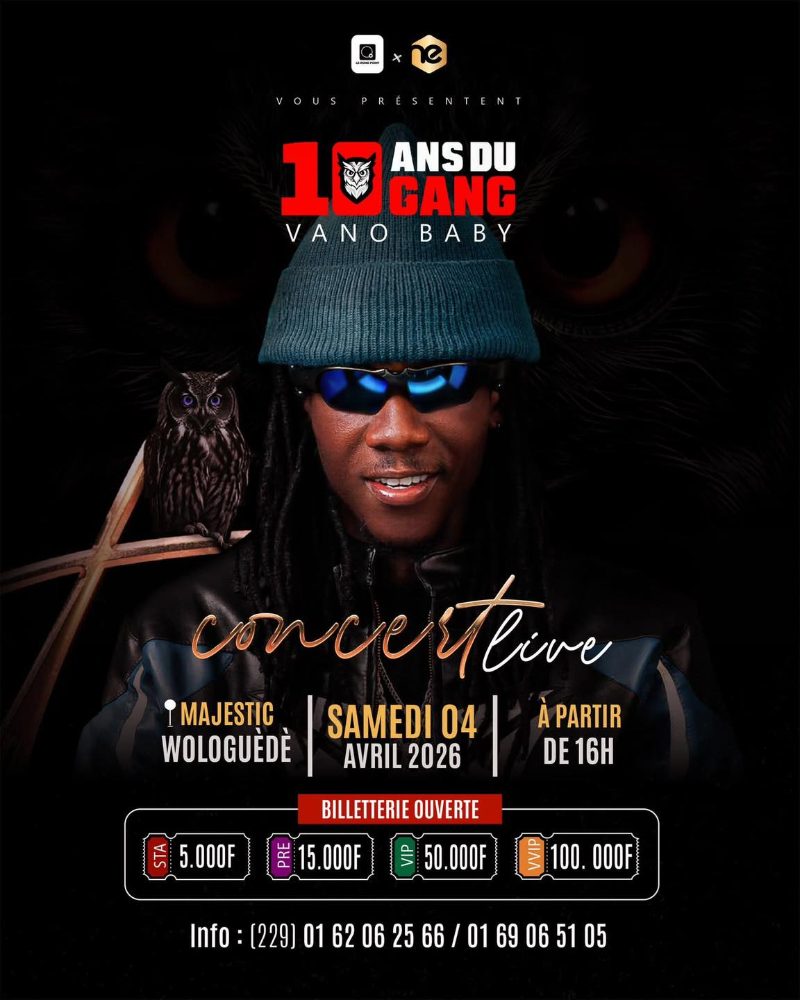
Le Sorcier Vivant · 2015 — 2025
Il y a 10 ans, un gamin de Cotonou entre dans un studio par hasard. Il n'avait pas de nom, pas d'argent, pas de plan.
Il avait juste une fille à nourrir, une voix que personne n'avait encore entendue, et une faim de réussir que rien ne pouvait éteindre.
Aujourd'hui, ce gamin règne. Trois fois Artiste de l'année. Des millions d'âmes touchées. Un empire construit brique par brique, silence par silence.
Ce site, c'est son histoire. Pas un résumé. Une légende.
↓ Cliquer pour entrer
Ce n'est pas juste 10 ans…
"Je n'avais rien sauf la voix et l'obstination."
Cotonou — Grand-Popo
De son vrai nom Aurel Sylvanus Adjivon, né le 9 mai 1994 à Sainte-Rita, Cotonou. Ses parents se séparent quand il a 4 ans. Son père l'élève seul — cuisinait, lavait ses vêtements, faisait tout pour lui.
Il prend quand même des chemins difficiles. Il fera de petits boulots. Il sera même docker au port.
"Je me voyais comme rien du tout."
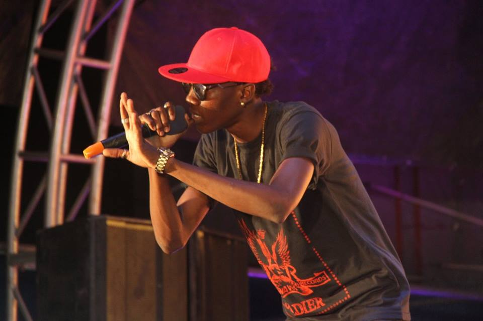
Le déclic
Sa fille naît. Tout change en une nuit. C'est elle qui m'a poussé vers le succès. Il entre dans un studio — par hasard. Il enregistre sa première chanson.
Sans argent, avec 2 000 francs, il va voir un directeur radio. Le gars refuse l'argent… mais passe sa musique. Le lendemain — il entend sa propre voix à la radio pour la première fois.
"Mon cœur battait fort. Je n'arrivais même pas à y croire."
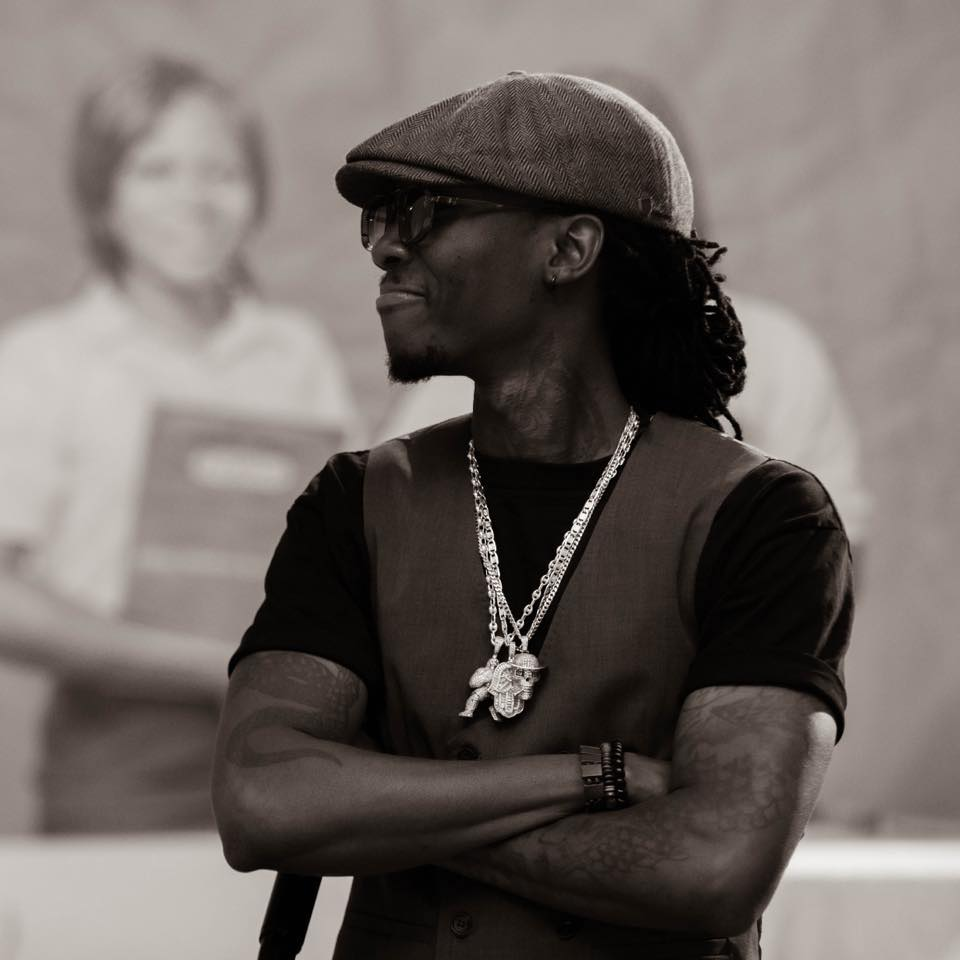
Naissance d'un nom
Au début, il s'appelait Doji. Il cherche un nom artistique sans succès. Jusqu'au jour où — "Vano" vient de son prénom Sylvanus. "Baby" vient naturellement.
Il s'inscrit au concours MTN Découverte Talents avec une seule pensée : "Si je ne fais pas top 3, c'est fini pour moi."
"On annonce mon nom en premier. 5 millions. Je suis officiellement riche."
Avant · La montée
Après · Explosion nationale
L'explosion nationale — avant & après
Avec les 5 millions, il investit 1,5 million dans sa musique, finance 3 clips vidéo publiés à Noël. Explosion totale. Le pays s'enflamme.
« Adigoue Gboun Gboun » fait le tour du Bénin. Il est partout. Impossible de faire un événement sans lui. Top 10 personnalités béninoises les plus influentes 2016.
"On survit dans la rue, on construit notre empire."
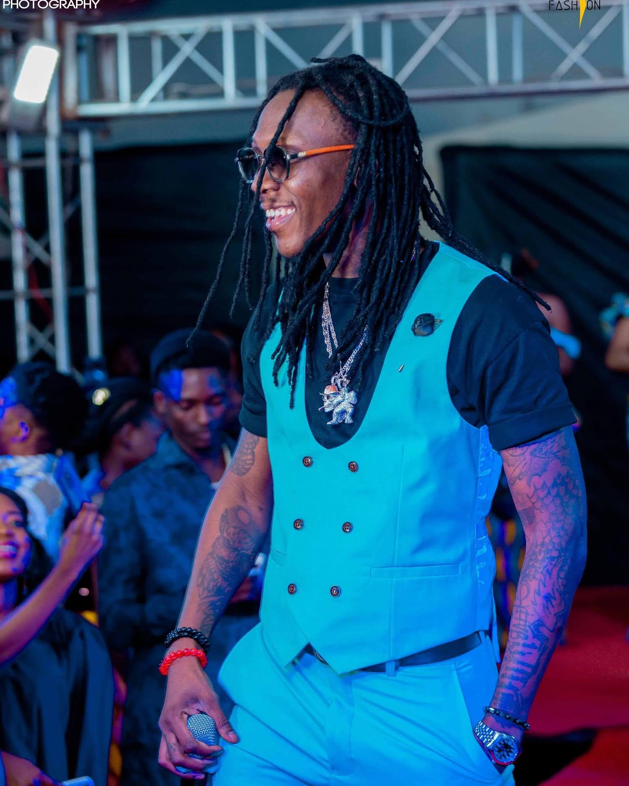
La transformation
Tout le monde attendait la bête. Il arrive avec une fleur. « Madame » — mélodie, douceur, vulnérabilité. Le Bénin est surpris. Et conquis une deuxième fois.
Suivi de « Chéri Coco », « Pas d'amis », « Mikpo », « Tu mérites tout ». Un artiste complet. Une force durable.
"Derrière la légende… il y a un père."
Règne absolu
Bénin Top 10 : Artiste de l'année 2021. 2022. 2024. Trois sacres consécutifs. Sans album — juste des singles. « Fitè » : 4,8 millions de vues en 2024.
Universal Music Africa. Red Line Africa. Celtiis Bénin. Betclic (n°1 paris sportifs France, +11M utilisateurs). Une institution.
"Le plus grand sacrifice pour rester au sommet ? Le bonheur. Parfois tu veux pleurer… mais tu ne peux pas."
« Drague Azonto » — premier single par hasard. Une voix que le Bénin n'avait jamais entendue.
1er prix national. 3 clips financés. Publiés à Noël. Explosion immédiate dans tout le pays.
Top 10 personnalités influentes du Bénin. Ouverture CAN U17. France. Gabon. Le monde s'ouvre.
« Bella », « Je s'en fou », « Tonssimè Chap » ft. NG Bling. Le gang grandit, le nom résonne.
Nouveau style mélodique. « Chéri Coco », « Tu mérites tout ». L'artiste complet se révèle.
Bénin Top 10. 1er sacre. 4 nominations. Sans album — juste la force brute d'un vrai.
Artiste de l'année. Brand Ambassador Celtiis Bénin. La musique devient empire commercial.
Brand Ambassador Betclic France (+11M users). Universal Music Africa. Red Line Africa.
« Fitè » : 4,8M vues YouTube. 3e Artiste de l'année consécutif. Règne incontesté.
Une décennie. Une légende vivante. Et le meilleur reste à venir.
Deux photos. Deux vérités. Un seul homme.
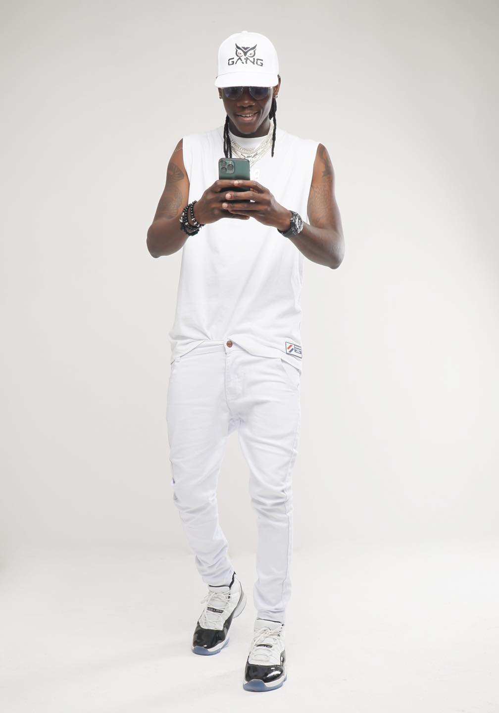
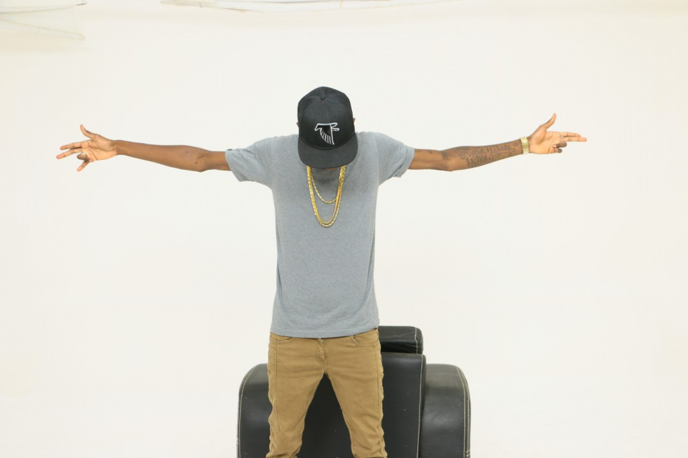
Il ne parle pas beaucoup. Il n'a pas besoin. Sa musique parle pour lui, ses actes parlent à sa place. Dix ans dans un milieu impitoyable — et il est toujours debout. Pas par chance. Par caractère.
Vano Baby ne joue pas un rôle. Il n'a jamais joué un rôle. Ce que vous voyez sur scène, dans les clips, dans les interviews — c'est lui. Le vrai. L'authentique. Celui qui dormait avec la faim et se réveillait avec l'ambition.
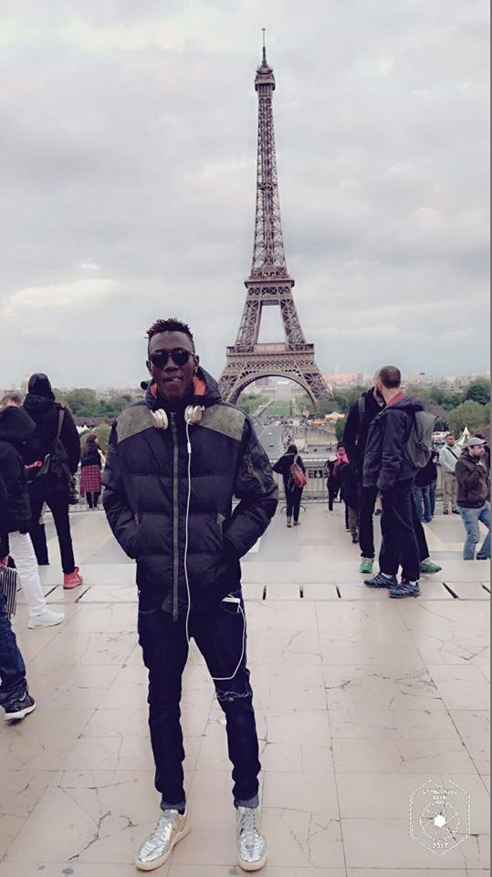
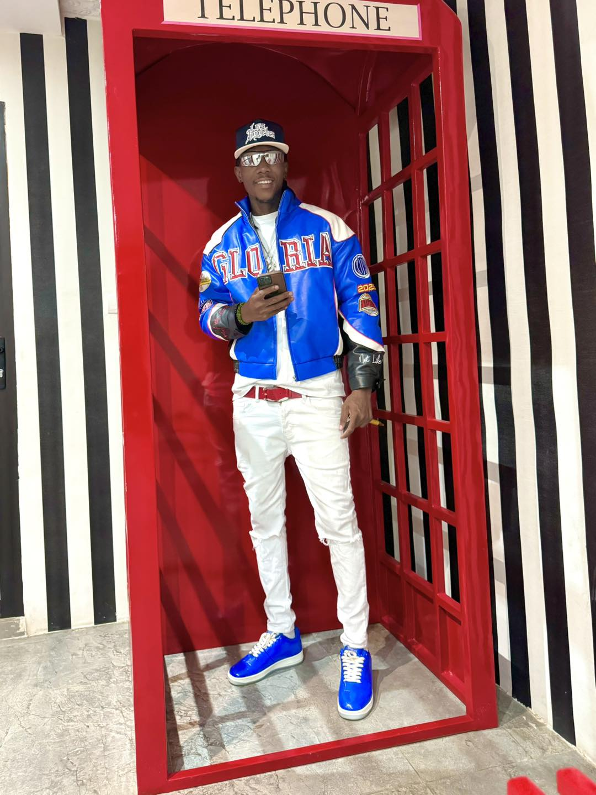
Dans la rue, on reconnaît les vrais. Les vrais n'ont pas besoin de crier. Ils posent leur musique — et les autres se taisent. Vano Baby, c'est ça. Ce calme derrière lequel se cache un volcan.
Triple Artiste de l'année. Des millions de vues. Des contrats internationaux. Mais ce qui définit le chef du gang, c'est pas les trophées. C'est que chaque personne qui l'écoute se sent comprise. Chaque chanson, c'est une vérité que tout le monde vivait mais que personne n'osait dire.
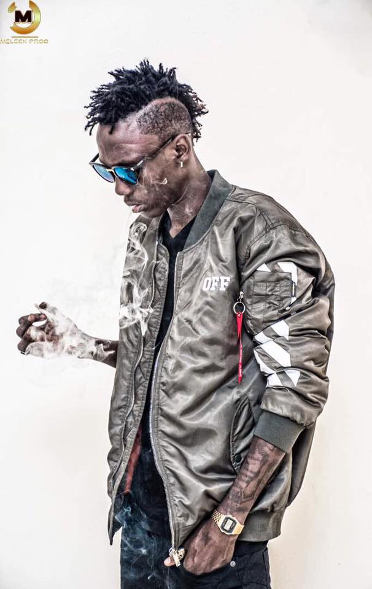
"Ce n'est pas juste un public…— Vano Baby, Le Sorcier Vivant
c'est une famille."
Sa fille est le déclencheur de tout. Son fils, la continuation de l'empire. Sans eux — rien de tout ça n'existe.
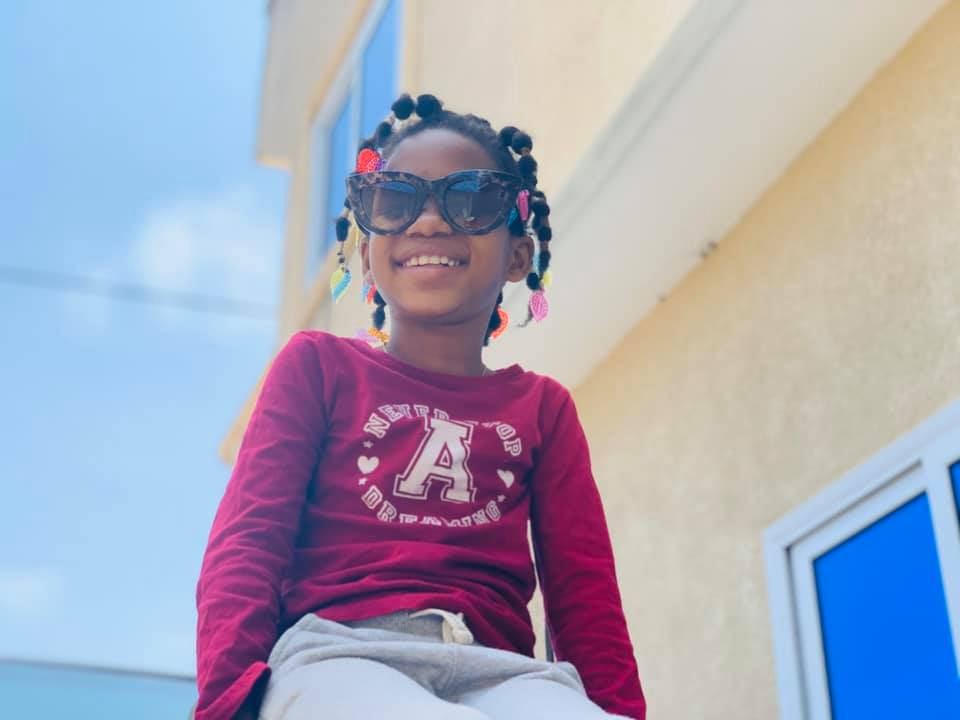
"C'est elle qui m'a poussé vers le succès. Tout a commencé pour elle."
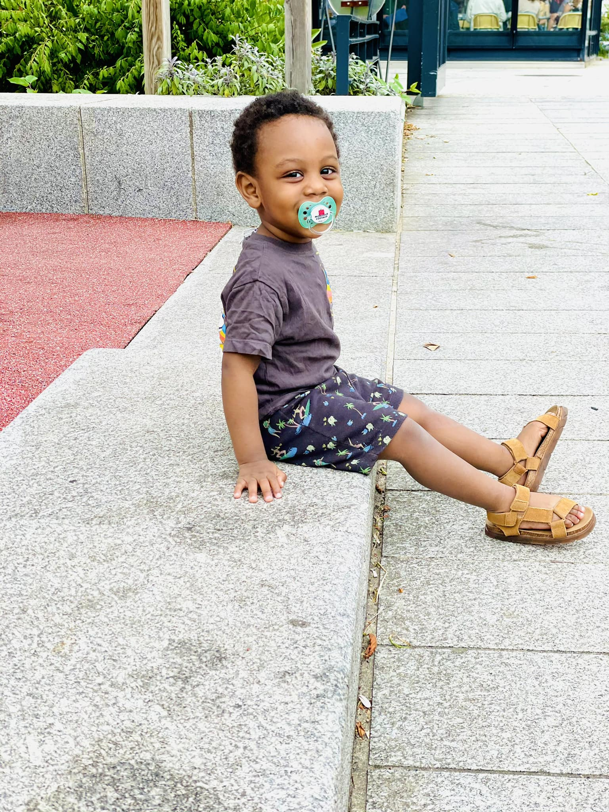
"Je voulais être le père que j'aurais voulu avoir. C'est ma force quotidienne."
2019 · Le tournant mélodique

2017 · Énergie brute

2020 · Afrobeats anthologie

2021 · Hymne aux fans
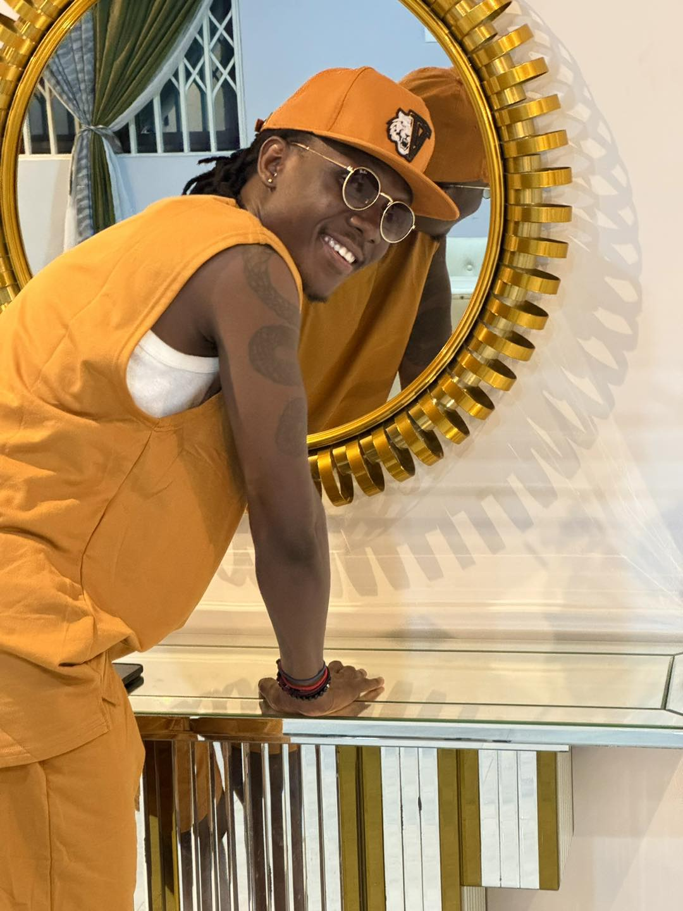
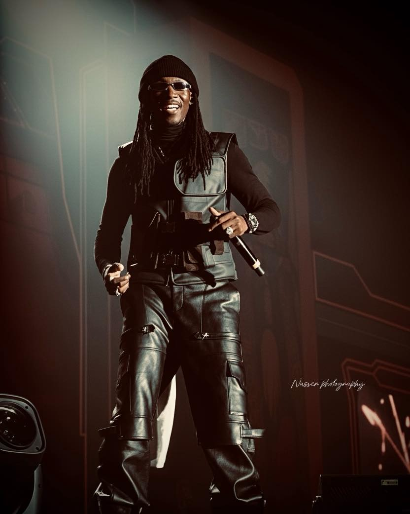
Booking, presse, collaborations — contactez l'équipe officielle du Sorcier Vivant.
vanobabyoff@gmail.com